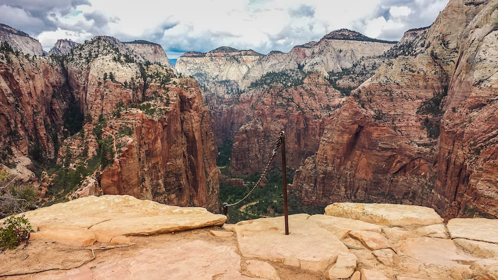

40˚ 46' 39.19" N
110˚ 22' 27.34" W
The
Cirque of
the Towers.
An augustly trip in the Wind River Range, Wyoming
Thusly was the dealio,
It would be a group of six of us in the high reaches of the Wind River Range for three days. Well, a rather trodden path relatively for this area, yet due to recent and incoming weather, we had the rare treat of having the place to ourselves. We arrived the first night, having driven up from the Salt Lake City area, and set up camp. We hiked in the next morning and spent the next two nights almost completely alone in the cirque.
Wyoming
a place almost constantly on my mind, the different locations around the mountains of wyoming always have captivated my imagination and beckoned me to explore.


Day One / Arriving into the Cirque
Wind Rivers Range, Wyoming / 40° 49' 55.59"N 110° 27' 19.48"W
The way into the cirque along big sandy lake proved to be a drizzly and muddy walk. Stream hopping and on and off rain filled in the gaps in possibly discomfort between bouts of effort in the ascents; however, one aspect which was particularly fortuitous about the cold weather was not just the lack of people, but also the complete lack of mosquitos, which is pretty rare to not have mosquitos chewing up your limbs when in the winds.

Day Two / August Snows
We had made our way into the cirque the night before, but with the morning came the clarity for why the weather would have kept so many away. We had been checking the weather the week leading up to the trip, we we kept checking it constantly as we were making our way there, and nothing was really amiss or too dangerous for reason, but for many, such weather would be a deterrant, as what started as a fair bit of rain turned into snow!

Despite the snow, we were relatively warm by the campfire. We also got a lucky break in the weather on this day, as it cleared up for a few hours, and we all raced for our cameras to capture the striking juxtaposition of summer yet clinging to life in fighting off this first assault of the impending long, harsh mountain winter.